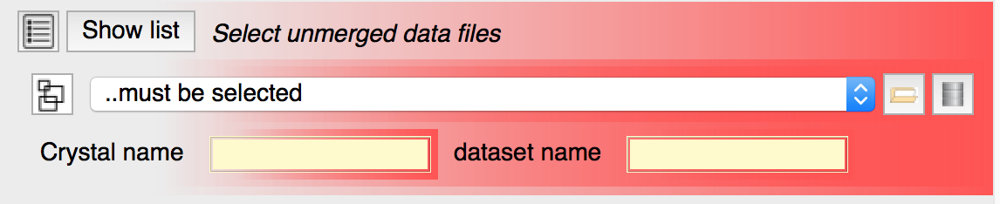

A red box around input data means that this option is mandatory and its current option is either undefined or invalid. The user must load data and/or set input options to correct this before the job can be run. In the "Data reduction" task, a file containing unmerged data must be specified and a "Crystal name" and "Dataset name" must be given.
